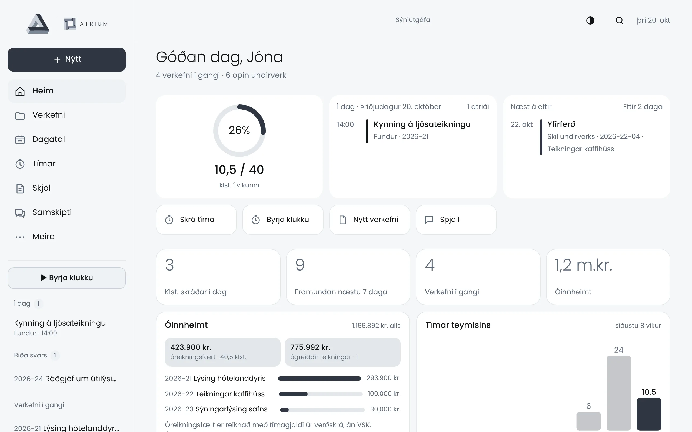
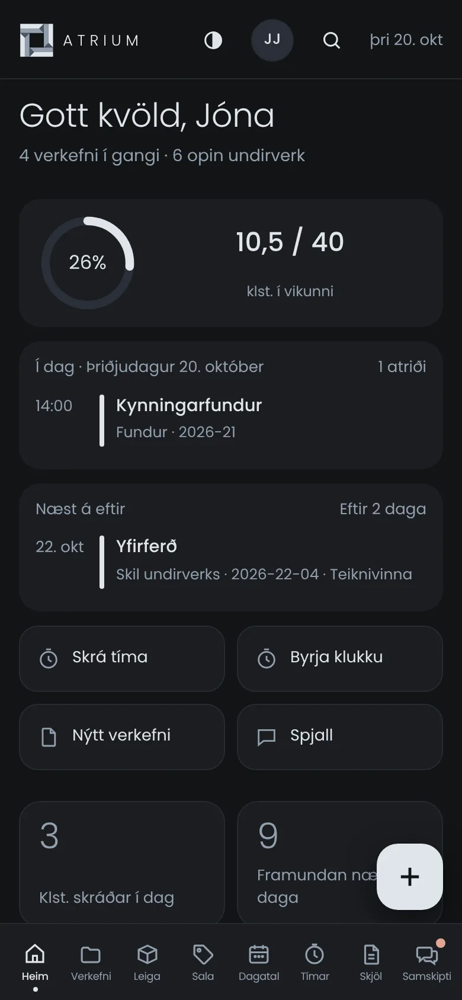
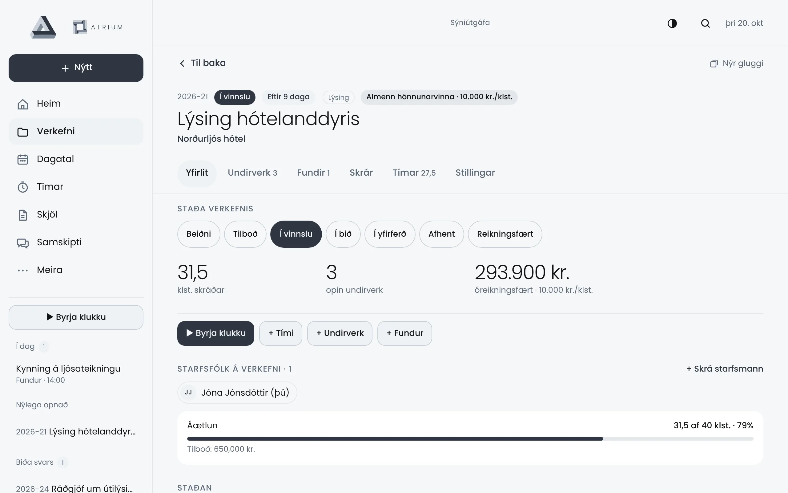
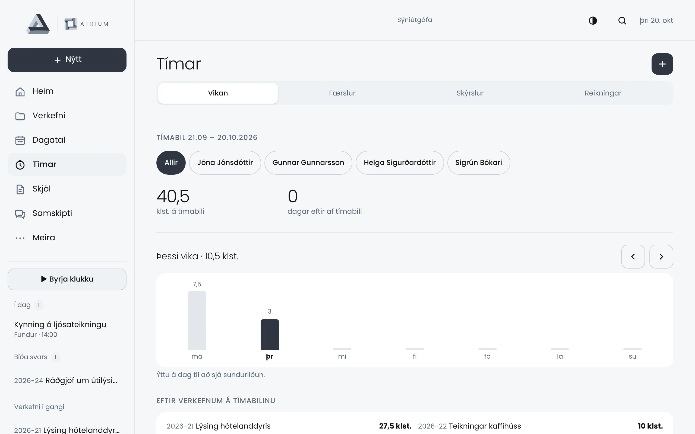
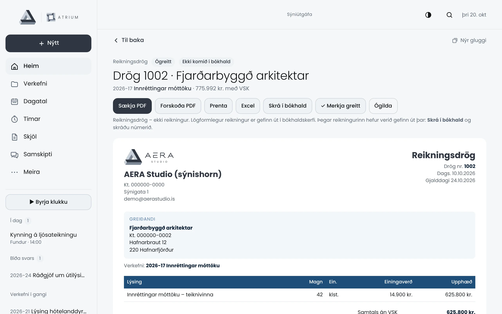
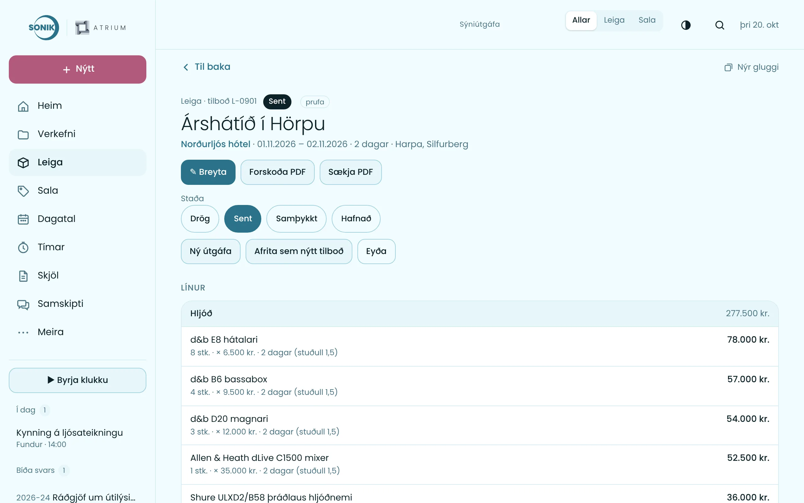
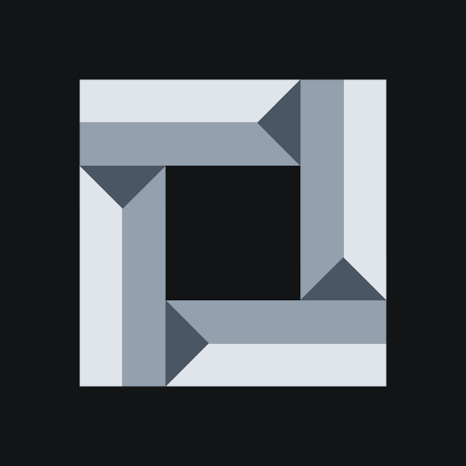
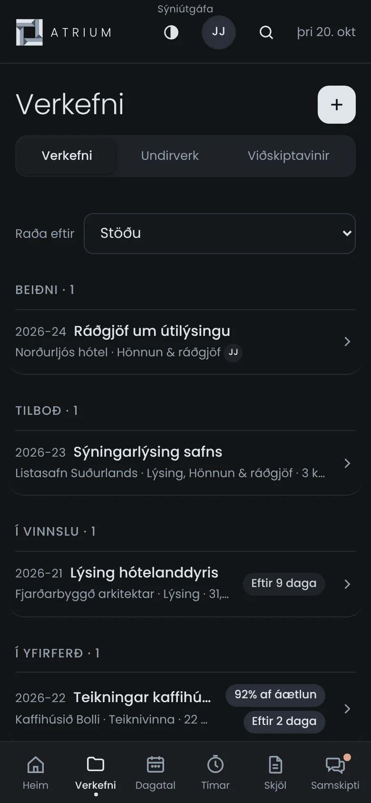
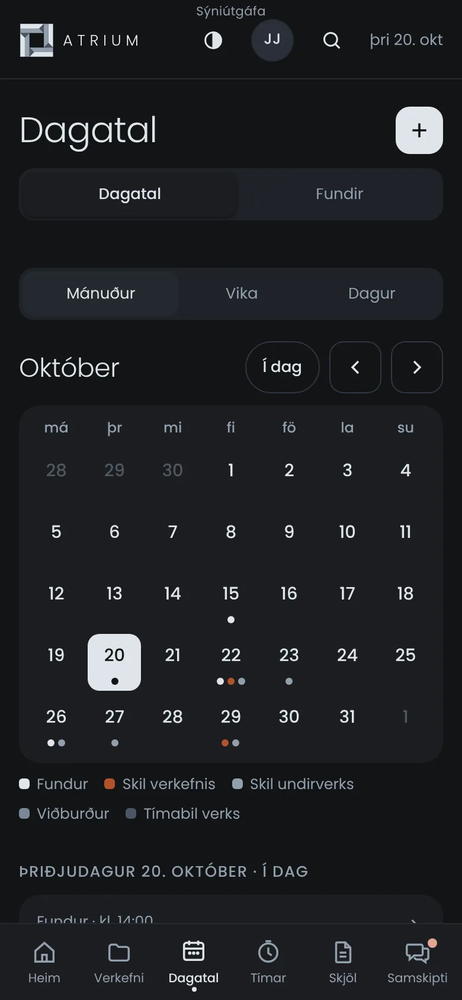

Verkefni, tímar, tilboð, reikningsdrög, skjöl og samskipti – í tölvu og síma. Sniðið að þínu fyrirtæki, með þínu merki og þínum gögnum.


Allt sem teymið þarf í daglegu starfi – á einum stað, alltaf uppfært hjá öllum.
Staða, skiladagar, áætlun og starfsfólk á einni síðu. Undirverk eftir sniðmáti og yfirsýn yfir allt sem er í gangi.
Skeiðklukka, vikuyfirlit og tímaskýrslur í PDF og Excel – beint á rétt verkefni og undirverk.
Óreikningsfært alltaf á hreinu. Tilboð og reikningsdrög með merki fyrirtækisins, tilbúin fyrir bókhaldskerfið.
Mánuður, vika eða dagur. Fundargerðir verða til í Word í réttri möppu og áminningar berast á réttum tíma.
Hvert verkefni fær möppur á SharePoint-síðu fyrirtækisins. Allt teymið sér sömu skrár – forskoðun beint í appinu.
Póstþræðir tengdir verkefnum úr Outlook og spjall teymisins – líka í símanum.
Staðan, tímar á móti áætlun, óreikningsfærð upphæð, undirverk, fundir og skrár – á einni síðu.

Tímar og útlagður kostnaður safnast á verkefnin. Þegar kemur að reikningi eru drögin tilbúin – með sundurliðun, merki og VSK.


Atrium er byggt úr einingum. Hvert fyrirtæki kveikir á því sem það notar – og ný virkni bætist við sem eining sem allir geta tekið upp.

Hvert fyrirtæki fær sína eigin uppsetningu af Atrium: sitt merki og liti, sitt app á heimaskjánum, sinn gagnagrunn og sína SharePoint-síðu.



Starfsfólk skráir sig inn með Microsoft-aðgangi fyrirtækisins. Skrár eru á SharePoint, póstur í Outlook – Atrium tengir það saman.

Sýniútgáfan er opin öllum – engin innskráning, tilbúin gögn. Viltu Atrium fyrir þitt fyrirtæki? Hafðu samband.